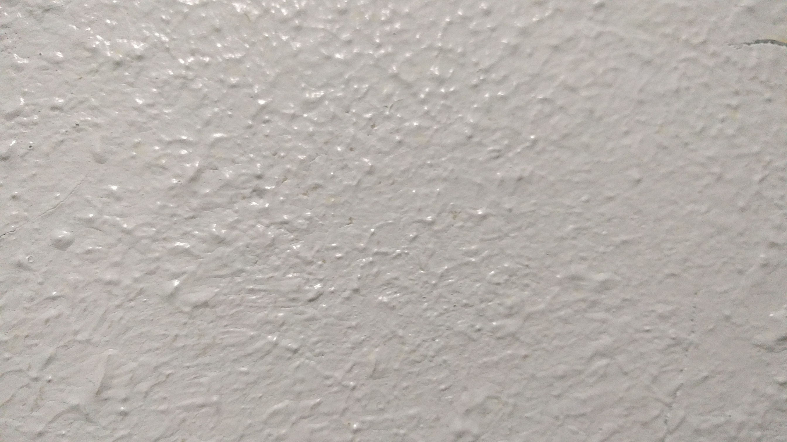
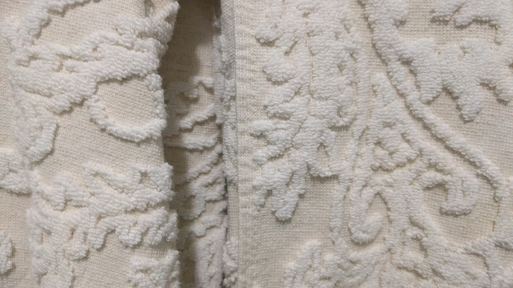
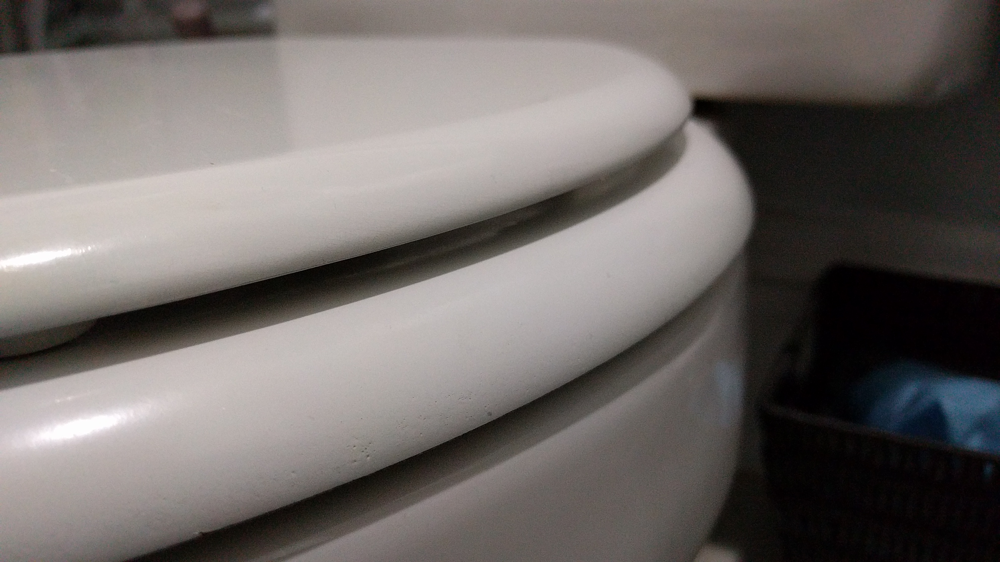

Textures are everywhere. Some of everywhere is in my apartment.
Some things in my apartment have a rough texture
Other things have a soft texture
Finally, some things in my apartment have a texture that is smooth
I'm still a novice at texture hunting. Here are some textures I'd really like to find someday:
Some of these are pretty crazy textures, but hey! A girl can dream...
Every good hobbyist needs to draw inspiration from a true master. Well, guess what? I have found some.
Please check out this website. It is called "Mayang's Free Textures," and it has over four thousand textures, organized in a very attractive format.
Mayang's Free Textures also has many amazing features, like the ability to purchase textures, look up amazing texture facts in the website's FAQ section, and see the very attractive colors and stylings that Mayang has applied to the website design.
Keep coming back, though! Maybe someday Mayang will be coming here to get some counter-inspiration from me when my textures website reaches its potential for true amazingness.